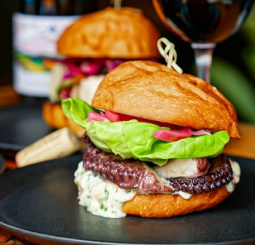

Octopus Burger with Chimichurri Aioli and Pickled Red Onions
About

Octupus burger with Chimichurri Aioli and Pickled Red Onions
This recipe is courtesy of Pioneer Square D&E, a neighborhood bistro offering creative yet comforting, from scratch fare. Founded by Seattle hospitality industry experts, husband and wife Jonathan Fleming and Libby Aker, D&E opened Fall 2018 and quickly became a popular neighborhood staple. With previously scaled down its offerings due to COVID restrictions, the restaurant is now fully re-open for dine-in, patio seating as well as takeout. The recent addition of Anthony Tran as Head Chef, paves the way for a new menu featuring the classic fried chicken selections known and loved by the regulars, as well as new seasonal items. The restaurant is located at 314 2nd Avenue South in Seattle. Find menus, directions, hours and more at pioneersquarede.com and @PioneerSquareDE on Instagram and Facebook.
Ingredients
Pickled Red Onions:
2 cups white vinegar
1 cup sugar
1 medium-size red beet diced roughly in 1" pieces
Octupus:
1 each Octopus 4-4lb
2 head garlic
1 bunch scallion
1 nub ginger
1 each yellow onion
1 C Red wine
2 C Soy Sauce
Chimichurri Aioli:
2 Cups Mayo
1/2 bunch cilantro, chopped
1/2 bunch parsley, chopped
1 shallot minced
5 cloves garlic minced
1 Fresno Minced (if desired)
2 Tbsp fish sauce
2 Tbsp white vinegar
1 lemon squeezed
1 Tbsp salt
1 Tbsp salt
Preparation
For the Pickled Red Onions:
Combine all liquids with sugar and beats, bring to a boil. Pour hot over sliced onions in a heat-proof container. Cover & cool in the fridge for at least 6 hours.
For the Octopus:
Clean octopus under cold running water making sure to get all tentacles and suction cups. Bring a pot of water to a boil, add Octopus to cook/blanch for 2-3 mins. Once removed from blanching liquid cut tentacles away from the rest of the octopus. Discard head & trim. In a new pot add water (enough to cover octopus) aromatics, red wine, and soy. Add in tentacle legs, cover, and bring to boil. Once at a boil bring the heat down to a low simmer for 3 to 3.5 hours until desired tenderness. Once tentacles are braised, remove them from stock and let cool on a separate pan the refrigerator. After cooled, cut tentacles separately and grill at high heat to order for 2-4 mins char and serve on the bun of your choice with the pickled onions and chimichurri aioli.
For the Chimichurri Aioli:
Mix all ingredients and refrigerate until ready to use.